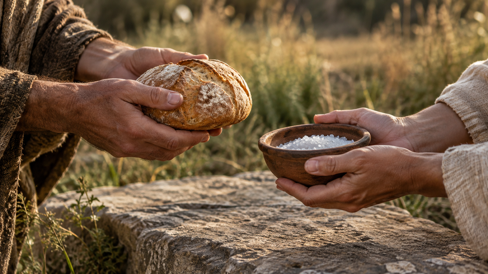
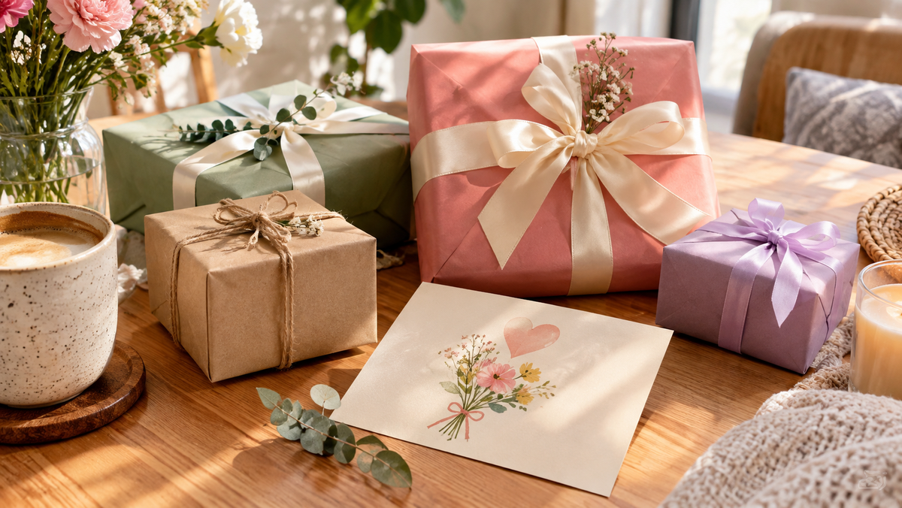

Гербера: почему ее дарят, когда не знают, что подарить
Гербера — это цветок, который спасает, когда не знаешь, что подарить. Она яркая, но не пафосная. Веселая, но не глупая.
Цветы
Полный архив материалов о символике, приметах, психологии, цветах, детях и праздниках. Фильтруйте по рубрикам или ищите через поиск в шапке сайта.
Гербера — это цветок, который спасает, когда не знаешь, что подарить. Она яркая, но не пафосная. Веселая, но не глупая.
Я знаю, что ты скажешь. «Внучка, не надо ничего дарить, у меня все есть». Ты всегда так говоришь.
Корпоратив — это странный праздник. С одной стороны, все свои, расслабленная атмосфера. С другой — это работа.
Вы когда-нибудь получали подарок, который явно был не новым? Или сами дарили вещь, которую когда-то подарили вам?
Пион — цветок, который в Китае называют «императорским». И на это есть причины.
 Дети
Дети
Первые отношения — это всегда сложно. А первые подарки в этих отношениях — сложно вдвойне. Денег нет, опыта нет, а страха — хоть отбавляй.
 Праздники
Праздники
В 2027 году восточный календарь переходит под управление Красной Огненной Козы. И это не просто абстрактный символ.
 Психология
Психология
Жена — самый сложный адресат. Казалось бы, вы живёте вместе, вы знаете друг друга. Но именно поэтому подарок жене так легко испортить.
 Приметы
Приметы
Платок — одна из тех вещей, которую мы дарим «просто так», не задумываясь. Красивый, полезный, недорогой.
 Символика
Символика
Мужья — это отдельная категория. Им не нужны банты и стихи. Они редко говорят «я хочу это», но искренне радуются, когда подарок попадает в точку.
Хризантему часто дарят осенью. Просто потому что она красивая, долго стоит и стоит недорого.
 Дети
Дети
У детей особая связь с подарками. Взрослый может подарить дорогую вещь и забыть о ней через неделю.
 Приметы
Приметы
Кошелёк — один из самых популярных и одновременно самых «опасных» подарков. С одной стороны, это практичная и нужная вещь.
 Праздники
Праздники
Новый год — это праздник, когда хочется подарить не просто вещь, а что-то с особым смыслом.
 Психология
Психология
Вы когда-нибудь задумывались, почему мы вообще дарим подарки?
 Праздники
Праздники
Новый год — единственный праздник, когда подарки дарят почти все и почти всем. И при этом мало кто задумывается: а почему, собственно, мы это делаем?
Орхидею часто дарят «просто потому что красиво».
 Психология
Психология
Подарок девушке — это не про вещь. Это про то, что вы о ней думаете. И она это прочитает.
Папа — единственный человек, который на вопрос «что тебе подарить?» отвечает «ничего, у меня всё есть». И это не кокетство. Он действительно так думает.
 Приметы
Приметы
Часы — единственный подарок, который может одновременно означать «я хочу провести с тобой всё время» и «я желаю тебе смерти».
 Дети
Дети
Десять лет — переломный возраст. Вчерашний малыш, который радовался любой машинке, вдруг начинает смотреть на подарок с прищуром.
Коллеге сложнее всего. Другу можно подарить что угодно — он поймёт. Родственнику — можно даже странное, всё равно простят.
Есть один психологический факт, который переворачивает всё, что мы знаем о подарках. Через год после подарка люди помнят эмоцию — а не вещь.
Лилию дарят реже, чем розы и тюльпаны. И не потому, что она некрасивая — а потому что мало кто понимает, что она означает.
 Дети
Дети
У бабушки есть одна особенность. Она всегда говорит «не надо». И всегда радуется любому подарку. Даже носкам. Даже открытке.
 Приметы
Приметы
Полотенце — вещь, которую мы используем каждый день. И одновременно — один из самых «запретных» подарков в народной традиции.
 Психология
Психология
У этого вопроса нет универсального ответа. Но есть три лагеря, которые спорят друг с другом уже много лет.
Папе сложнее всего. Маме можно подарить цветы и она растает. Другу — что-то по интересам, и он доволен.
 Символика
Символика
Браслет — единственный подарок, который человек носит на руке каждый день.
Тюльпан — самый недооценённый цветок в букетах. Его дарят по инерции: дёшево, весна, не розы.
 Дети
Дети
У подростка две проблемы с подарком маме. Первая — денег нет. Вторая — сказать хочется, а слов подходящих тоже нет.
 Символика
Символика
Большинство советов «что подарить парню» сводятся к трём вещам: носки, пенка для бритья и сертификат в магазин электроники.
Нож, зеркало и ножницы — три подарка, которые в России почти никто не дарит просто так. Считается, что они «разрезают» и «отражают» связь между людьми.
Я подарил отцу часы на его шестидесятилетие. Хорошие, швейцарские, с гравировкой.
 Символика
Символика
Мой друг однажды подарил девушке кольцо. Не помолвочное — просто красивое, серебряное, с маленьким камнем.
 Дети
Дети
Моей племяннице исполнилось пять. Я подарил ей огромную мягкую игрушку — медведя размером с неё саму.
Однажды я подарил жене букет чайных роз. Красивых, кремовых, дорогих. Она улыбнулась, поставила в вазу — и весь вечер была какая-то задумчивая.
 Символика
Символика
Моя мама однажды сказала фразу, которую я запомнил на всю жизнь: «Мне не нужны дорогие подарки. Мне нужно, чтобы ты позвонил».

ПсихологияМоя бабушка всю жизнь дарила подарки «просто так». Без повода, без даты, без причины. Увидит в магазине смешную кружку — купит.
Моя жена однажды получила букет — и расстроилась. Я тогда ничего не понял. Красивые цветы, дорогие, от души. А она смотрит на них и молчит.
 Праздники
Праздники
Помню, как мы с женой переехали в первую свою квартиру. Ремонт, коробки, запах краски — и вечером стук в дверь.
Мой дед был кузнецом. В его мастерской висел на стене старый охотничий нож с потёртой рукоятью — и я помню, как однажды сосед попросил его продать.
 Психология
Психология
Моя бабушка говорила: «Подарок — это от сердца. А презент — это от службы». Я тогда не понимала. Мне казалось — какая разница, если коробка одинаковая?
Выбираете подарок родителям, который будет “про нас”, а не просто красиво упакованная вещь?
Иногда достаточно одного букета — и человек понимает: «я важен», «я помню», «я выбираю тебя». Но цветы — это не просто красота.
Есть подарки, которые радуют один вечер… а есть те, к которым возвращаются снова и снова.
Иногда лучший подарок — не вещь, а момент, который снова оживает.

ПсихологияВы когда-нибудь ловили себя на мысли: «Хочу сделать приятно, но не знаю, что выбрать»? Подарок — это не про цену, а про попадание в человека.